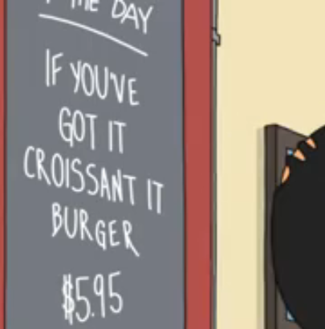
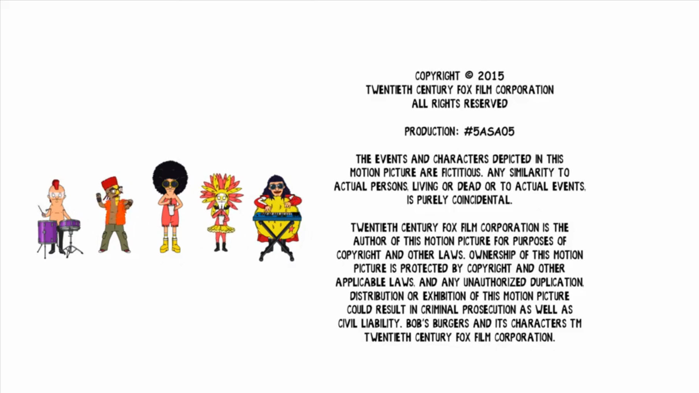

Bob's Burgers
Brief Breakdown
Bob's Burgers is an american sitcom created by Loren Bouchard for the Fox Broadcasting Company. The show has been running since January 19th, 2011 and has 15 seasons and counting.
A feature film was released on May 27 th, 2022.
Plot
The show centers on a family that runs a hamburger restaurant. Loren Bouchard stated Bob's Burgers came out because of Fox's animation brand centers mostly on family, but that he also wanted to dabble in workplace comedy. The show is said to fill the void created by the cancellation of King of the Hill (which was cancelled in 2010), which former Bob's Burgers executive producer Jim Dauterive worked on for nearly its entire run.
Running Gags
| Store Next Door |

|
|---|---|
| Pest Control |

|
| Burger of the day |

|
| End credits |

|